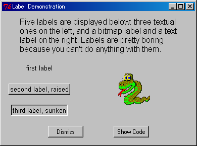

HOME
HOME Post Messages
Post Messages
|
HOME |
Post Messages |
Tkinter is a wrapper of Tcl/Tk as the name implies. Tcl/Tk is a pioneering work of OS independent GUI and widely used nowadays. You should learn Tk first, I think, even if you are rather interested in other GUI tools.
When you download Tcl/Tk, the reference manual and the demo scripts are included, which make easy to learn the tool. In addition, you can find a lot of resources about Tcl/Tk on the web. On the contrary, little resources about Tkinter are available on the web. There is almost no demo script of Tkinter.
Even Tk is extremely convenient, I (and many people) don't like Tcl which is a script language that control Tk. For this, Tk has been ported into popular programming languages, such as Perl, Python, Ruby, and Scheme.
Even Tkinter is substantially different from Tcl/Tk, no reference manual was available, which makes it difficult to use Tkinter. Now, some manuals are available on the web and a book has been published, by which Tkinter programming is getting easier.
On the other hand, I could find little demos on Tkinter on the web. So, I have translated the demo scripts included in the archive of Tcl/Tk into Tkinter. I enjoyed this process and am convinced that Tkinter is much smarter than Tcl/Tk. I hope the translated demo codes are useful.
Each demo is executable by itself. For instance, type
>python label.pyfrom the console if you want to see label.py (Fig. 2).

Fig. 2. Demo of labels.
|
HOME |
Post Messages |